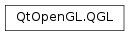

QGL¶
Detailed Description¶
The QGL namespace specifies miscellaneous identifiers used in the Qt OpenGL module.
-
PySide2.QtOpenGL.QGL.FormatOption¶ This enum specifies the format options that can be used to configure an OpenGL context. These are set using
QGLFormat.setOption().Constant Description QGL.DoubleBuffer Specifies the use of double buffering. QGL.DepthBuffer Enables the use of a depth buffer. QGL.Rgba Specifies that the context should use RGBA as its pixel format. QGL.AlphaChannel Enables the use of an alpha channel. QGL.AccumBuffer Enables the use of an accumulation buffer. QGL.StencilBuffer Enables the use of a stencil buffer. QGL.StereoBuffers Enables the use of a stereo buffers for use with visualization hardware. QGL.DirectRendering Specifies that the context is used for direct rendering to a display. QGL.HasOverlay Enables the use of an overlay. QGL.SampleBuffers Enables the use of sample buffers. QGL.DeprecatedFunctions Enables the use of deprecated functionality for OpenGL 3.x contexts. A context with deprecated functionality enabled is called a full context in the OpenGL specification. QGL.SingleBuffer Specifies the use of a single buffer, as opposed to double buffers. QGL.NoDepthBuffer Disables the use of a depth buffer. QGL.ColorIndex Specifies that the context should use a color index as its pixel format. QGL.NoAlphaChannel Disables the use of an alpha channel. QGL.NoAccumBuffer Disables the use of an accumulation buffer. QGL.NoStencilBuffer Disables the use of a stencil buffer. QGL.NoStereoBuffers Disables the use of stereo buffers. QGL.IndirectRendering Specifies that the context is used for indirect rendering to a buffer. QGL.NoOverlay Disables the use of an overlay. QGL.NoSampleBuffers Disables the use of sample buffers. QGL.NoDeprecatedFunctions Disables the use of deprecated functionality for OpenGL 3.x contexts. A context with deprecated functionality disabled is called a forward compatible context in the OpenGL specification.
© 2018 The Qt Company Ltd. Documentation contributions included herein are the copyrights of their respective owners. The documentation provided herein is licensed under the terms of the GNU Free Documentation License version 1.3 as published by the Free Software Foundation. Qt and respective logos are trademarks of The Qt Company Ltd. in Finland and/or other countries worldwide. All other trademarks are property of their respective owners.